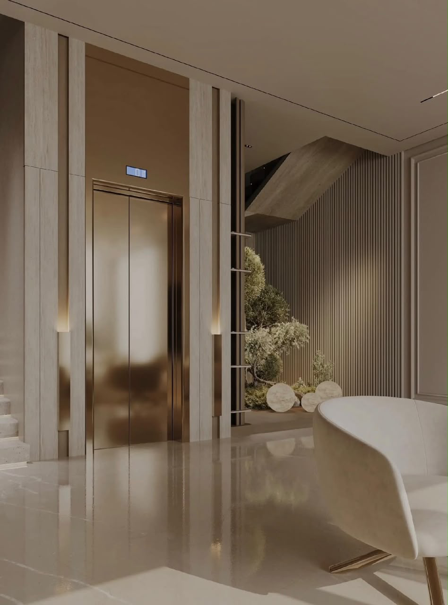
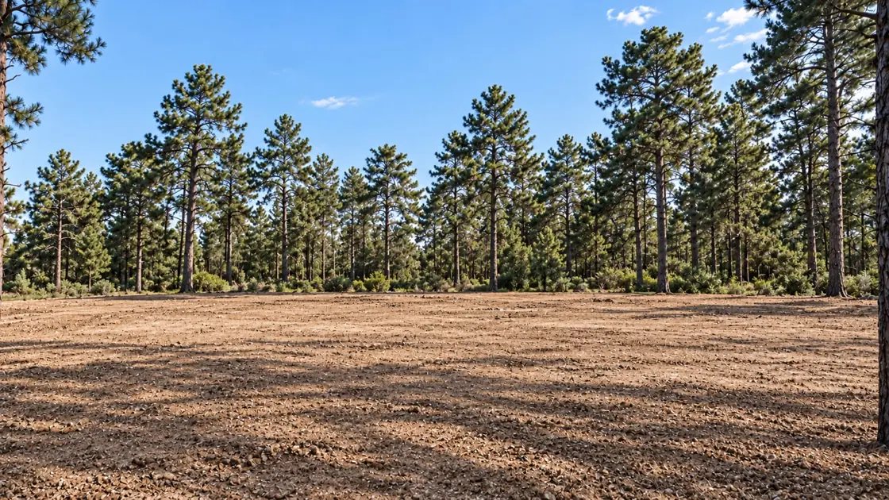

A distinctive presence.
The pleasure of living large.
6 en-suite bathrooms · One for each suite.
1 staff bedroom with its own bathroom, included in the villa. Located on the ground floor near the kitchen, it is separate from the suites and the optional guest bedroom.
Private lift proposed.
From €2 million
Furniture excluded · Indicative starting price · Subject to the selected villa and offer terms.An extra guest bedroom.
If you wish, one of the two living rooms in your Margaux villa can be converted into an additional guest bedroom at no extra cost. This is the only layout modification offered; the architecture and the rest of the layout remain unchanged.
The visuals presented on this website are provided for illustrative purposes only and are non-contractual.
Plans & layout
Including terraces · Excluding swimming pool

Tap the plan to open the PDF and zoom without losing sharpness.

Tap the plan to open the PDF and zoom without losing sharpness.
Total: 856.37 m², including 240.28 m² of terraces. The 616.09 m² excluding terraces includes the staircase and lift footprints.
The visuals presented on this website are provided for illustrative purposes only and are non-contractual.
Private lift.
A discreet connection between Margaux’s floors. Bronze tones, pale stone and vertical lines create a harmonious extension of the living spaces.

The visuals presented on this website are provided for illustrative purposes only and are non-contractual.
A powerful silhouette.
Space to breathe.
Margaux first reveals its silhouette: long roofs, stone pillars and a glazed façade framing a sculptural staircase. Wood softens the composition and reflections add depth. Each view invites you to discover the next.
The making of Margaux.
From the plot to the finished villa. Slide through the stages or press play.

Illustrative construction sequence. These images do not show an actual building site. · The visuals presented on this website are provided for illustrative purposes only and are non-contractual.
The visuals presented on this website are provided for illustrative purposes only and are non-contractual.
The garden comes in
throughout the home.
The pool follows the façade and extends the terraces. Through expansive glazing, the living rooms remain connected to the outdoors. Lunch in the shade or a moment by the water: spaces respond to one another throughout the day.
The visuals presented on this website are provided for illustrative purposes only and are non-contractual.
The strength of stone.
The softness of everyday life.
A timber soffit, a step over water, a finely drawn balustrade. Up close, Margaux reveals the details that shape its character. The terraces become living spaces opening onto the garden.
The visuals presented on this website are provided for illustrative purposes only and are non-contractual.
Light finds
its full expression.
In the double-height living room, large windows draw the eye towards the garden. Curved seating invites people together, while wood, sheer curtains and bronze accents soften the space. Greenery brings life to the heart of the room.
The visuals presented on this website are provided for illustrative purposes only and are non-contractual.
A passage.
A perspective.
The staircase’s dark lines cross the transparency of glass. A suspended sculpture catches the light beside it, while water guides the eye below. A circulation space that contributes fully to the living room’s atmosphere.
The visuals presented on this website are provided for illustrative purposes only and are non-contractual.
Conversations
continue.
Pale chairs surround a large dark table with delicate veining. Glass pendant lights set the rhythm, while wood brings warmth. A place to share a meal and enjoy being together.
The visuals presented on this website are provided for illustrative purposes only and are non-contractual.
A generous kitchen.
A room in its own right.
A beautiful walnut door marks the entrance to Margaux’s enclosed kitchen. Around a vast pale-stone island, grey-toned wood, integrated storage and bronze touches create warmth. A space separate from the living rooms, dedicated to preparing and sharing.
The visuals presented on this website are provided for illustrative purposes only and are non-contractual.
Everything has
its place.
Beside the kitchen, the utility room uses the same materials in a practical layout: laundry area, generous worktop, sink and linen storage. A service room designed with the same care as the living spaces.
The visuals presented on this website are provided for illustrative purposes only and are non-contractual.
Illustrative designs to be adapted to the villa’s plans and selected equipment. Enclosed kitchen, separate from reception rooms.
A coffee.
The pleasure of being together.
Alongside the separate main kitchen, the kitchenette welcomes spontaneous moments: making coffee, sharing a snack or talking around the counter. Near the large window, it extends the convivial atmosphere of the living spaces.
The visuals presented on this website are provided for illustrative purposes only and are non-contractual.
Generous suites.
Your pace, your privacy.
Beyond the reception rooms, Margaux invites you to slow down. Four interior concepts combine fine wood, stone and light textiles around a generous bed and seating area. Each extends into a separate dressing room with storage and a central island.
The visuals presented on this website are provided for illustrative purposes only and are non-contractual.
Proposed interiors to be adapted to the villa’s plans. Furniture and accessories available at an additional cost, subject to quotation.
Stone soothes.
Light envelops.
Two bathroom concepts extend the suites. The XXL version combines a freestanding bath, double shower and long walnut vanity. The XL version features a large glazed shower and double basin, with grey oak and pale stone. Bronze touches complete this calm setting.
The visuals presented on this website are provided for illustrative purposes only and are non-contractual.
Illustrative interiors to be adapted to the villa’s plans and selected equipment.
Time
belongs to you.
A coffee in hand, a walk by the water, a few minutes to yourself. Margaux is also about these peaceful moments, when architecture becomes the discreet backdrop to everyday life.
The visuals presented on this website are provided for illustrative purposes only and are non-contractual.
The visuals presented on this website are provided for illustrative purposes only and are non-contractual.
The same attention,
at every scale.
From the villa’s silhouette to its materials, one intention guides the project: creating living spaces that combine architectural character with the pleasure of feeling at home.
Your complete brochure.
Direct download, no form required.
The estate’s most exclusive collection
Your Margaux project.
Let’s discuss your choice of villa within the estate.
Furniture and accessories shown illustrate the atmosphere; they are available at an additional cost, subject to quotation.